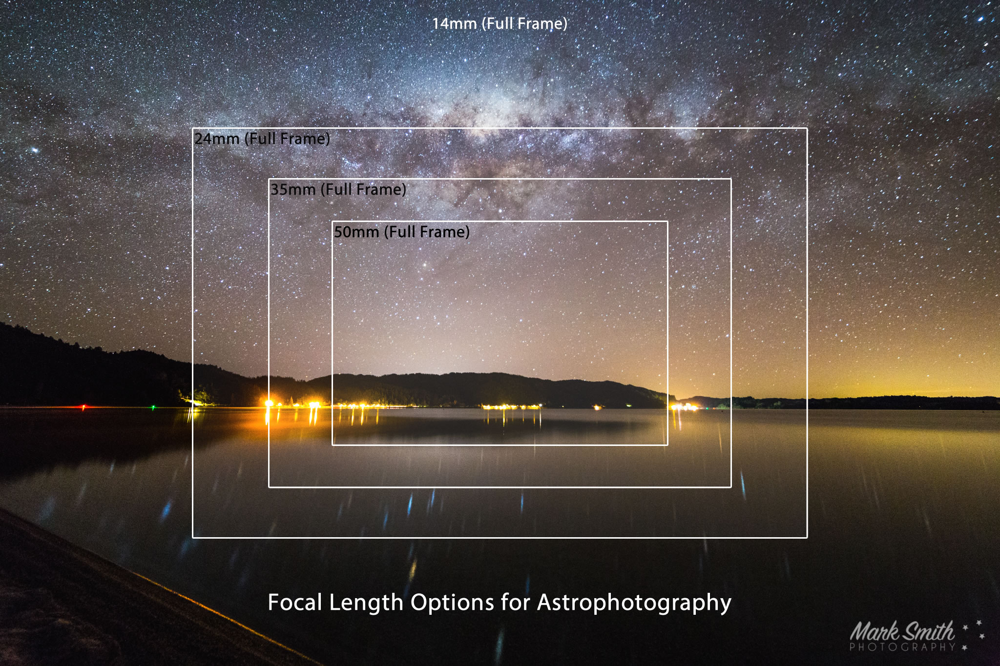
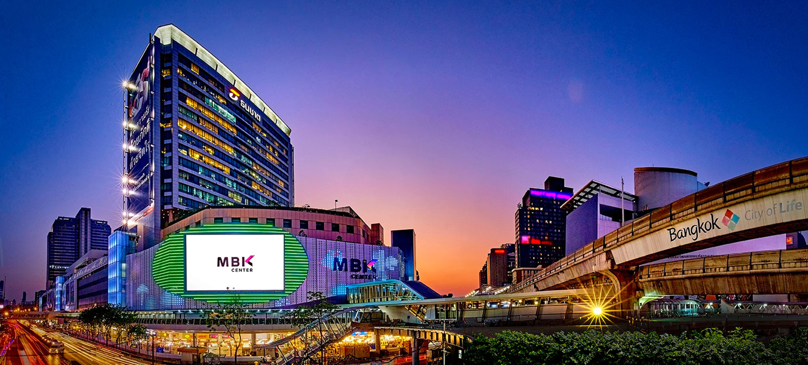

10 Oct 2019
มีมือใหม่หลายท่านที่กำลังตัดสินใจจะซื้อกล้องคู่ใจมาใช้งานสักตัว แต่ไม่รู้ว่าจะซื้อกับร้านไหนดี วันนี้เราจึงขอแนะนำแหล่งจำหน่ายกล้องที่บรรดาช่างภาพนิยมเลือกซื้อเลือกหามาบอกกล่าวเผื่อเป็นแนวทางในการตัดสินใจ โดยส่วนใหญ่จะขอเน้นไปในร้านของกรุงเทพเป็นหลัก เพราะถือเป็นแหล่งรวมสินค้ามากที่สุดของประเทศก็ว่าได้
เริ่มจากแหล่งช็อปปิ้งยอดนิยมสำหรับคอไอที นั่นคือ พันธ์ทิพย์พลาซ่า ประตูน้ำ
เพราะที่นี่นอกจากขึ้นลือชาเรื่องของอุปกรณ์ไอทีแล้ว ร้านกล้องก็มีหลายร้านให้เลือกอยู่เหมือนกัน
และที่นี่เปรียบเหมือนแหล่งรวมอุปกรณ์กล้องมากมายแห่งหนึ่งเลยก็ว่าได้
แต่ที่ต้องทำใจคือมันเป็นร้านที่มีเจ้าของเดียวกันแต่เปิดหน้าร้านหลายห้องในห้างครับ!
ร้านกล้องในห้างพันธ์ทิพย์มีอยู่หลายร้านครับ เช่น ร้าน Laox เจ้าของเดียวกับ Digilife ครับ
ส่วนอีกร้านนึงมีชื่อหลากหลายครับ เช่น Photo Vision , Photo AV , AV Center , Camera&Lens ซึ่งจริง ๆ
แล้วเป็นร้านค้าที่เรียกว่าเครือเดียวกัน แต่เปิดร้านกระจายเต็มห้าง ส่วนร้านอื่น ๆ ก็พอมี เช่น World
Camera และร้านค้าอื่น ๆ ที่ขายพวกกล้องคอมแพกต์ทั่วไปซะมากกว่า แถมที่นี่ยังมีร้านรับซ่อมกล้องอีกด้วย
หากจะหากล้อง DSLR หรือพวกเลนส์ลองไปเดินด้อม ๆ มอง ๆ ตามร้านพวกนี้แล้วกันครับ แต่มีข้อแนะนำไว้ก่อนดังนี้
อย่าซื้อสินค้าด้วยบัตรเครดิต เพราะร้านเหล่านี้มักจะชาร์จค่ารูดบัตร เป็นไปได้เงินสดดีที่สุดแถมต่อรองได้ด้วย
เช็คราคาหลาย ๆ ร้านให้ดี ๆ ก่อนตัดสินใจ เพราะราคาแต่ละร้านไม่เท่ากันแม้จะเป็นเครือเดียวกัน
ร้านเหล่านี้มีทั้งสินค้าประกันศูนย์และสินค้าประกันร้าน ซึ่งเงื่อนไขการประกันของสินค้าประกันร้านเท่ากับเราซื้อเครื่องหิ้วดี ๆ นั่นเอง ราคาถูกกว่าแต่แลกกับความเสี่ยงที่ไม่อยู่ในการรับประกันของศูนย์บริการ
เช็คสินค้าดี ๆ ก่อนตัดสินใจจ่ายตังค์ มิฉะนั้นอาจมีรายการย้อมแมว
แหล่งต่อมาที่น่าสนใจก็คือ ฟอร์จูนทาวน์ ที่นี่ก็ถือเป็นห้างไอทีอีกห้างหนึ่งใจกลางกรุงเทพเหมือนกัน และตอนนี้มีการปรับปรุงให้มีโซนร้านค้ากล้องที่รวบรวมเอาร้านกล้องใหญ่ ๆ มาไว้ที่เดียวกันให้ตีกันเล่น มาดูดีกว่าว่าห้างไอทีมอลล์ ฟอร์จูนทาวน์มีร้านอะไรบ้าง เริ่มจาก Big Camera , EC Mall , Zoom Camera , Capa Digifoto , Pixpros House , Pix-One , Photo Hut , Digital2Home , Camera Cafe , Sunny Camera , World Camera และร้านขายอุปกรณ์เสริมอื่น ๆ อีก เยอะไหมล่ะ ส่วนการซื้อกล้องที่นี่ เนื่องจากเป็นร้านใหญ่ มีชื่อเสียง จึงมั่นใจได้ว่าเสี่ยงน้อยกว่าการไปเดินพันธ์ทิพย์ครับ
บางร้านมีขายทั้งประกันศูนย์และประกันร้าน ส่วนบางร้านก็ขายแต่สินค้าประกันศูนย์อย่างเดียว เช็คดี ๆ ก่อนซื้อครับ หรือถ้าอยากได้ของถูกก็ไม่ว่ากัน
หลายร้านต่อรองได้ แต่บางร้านต่อรองไม่ได้ครับ
มีหลายร้านที่นี่ยินดีรับบัตรเครดิตแถมมีผ่อน 0% ด้วย
ร้านค้าอยู่ในโซนเดียวกัน ขึ้นอยู่กับจริตของคุณแล้วล่ะ ว่าถูกชะตากับร้านไหน
ยังไม่สะใจแค่นี้ครับ เดี๋ยวพาไปต่อ โดยสถานที่ต่อไปก็คือบริเวณเซ็นทรัลลาดพร้าวครับ ที่นี่เป็นแหล่งรวมร้านขายกล้องอีกแห่งที่ได้รับความนิยมไม่แพ้กัน เดี๋ยวมาลองดูว่าร้านค้าต่าง ๆ อยู่ตรงไหนบ้าง ร้านกล้องโซนเซ็นทรัลลาดพร้าวที่เยอะที่สุดก็อยู่ในตัวห้างนั่นแหละครับ เพราะที่เซ็นทรัลลาดพร้าวเองก็มีโซนร้านค้ากล้องด้วยเช่นกัน ไม่นับรวม Powerbuy ที่มีอยู่ทุกสาขาของห้างเซ็นทรัล โดยโซนกล้องจะอยู่ที่ชั้นใต้ดิน มีทั้งร้าน Fotofile , Photohut , Fotofriend , Digital2Home กระจุกอยู่ติดกันแบบประจันหน้า ยังไม่หมดแค่นี้เพราะสามารถเดินข้ามสะพานลอยมาฝั่งตรงข้ามที่เต็มไปด้วยร้านอัดรูปมากมาย มีร้านกล้องชื่อ World Camera และ ร้าน Sunny Camera แถมยังมีร้านฮุ้งแอนด์ณา ที่มีของมือสองกับรับซ่อมกล้องอยู่ฝั่งเดียวกันอีกด้วย
แนะนำมาหลายที่แล้ว แน่นอนว่าขาดที่นี่ไม่ได้ นั่นคือ MBK หรือ
มาบุญครองรวมถึงย่านสยามสแควร์และพารากอนลากยาวไปถึงเซ็นทรัลเวิลด์ด้วย
แถวนี้มีร้านกล้องที่เรียกว่าเป็นสาขาใหญ่ที่มีของที่คุณอยากได้อยู่เพียบ ไม่แพ้ที่อื่นเลยก็ว่าได้
เริ่มจากในส่วนของมาบุญครองก่อนเลยดีกว่า เพราะที่นี่เค้าเปิดโซนกล้องขึ้นมาเป็นพิเศษ บริเวณชั้น 5 เรียกว่า
Camera Center
แน่นอนว่ามีร้านดังอย่าง Big Camera , Digilife , Fotofile และศูนย์บริการ Canon
รวมถึงร้านค้าจำหน่ายอุปกรณ์เสริมต่าง ๆ และ
ไม่หมดแค่นี้เพราะที่นี่มีร้านค้าที่มีกล้องวางขายกันอีกมากมายตั้งแต่กล้องคอมแพกต์ไปจนถึงกล้อง DSLR ขายปน
ๆ กับมือถือ
แท็บเลตไปด้วย
แต่ถ้าให้แนะนำร้านใหญ่ๆดูน่าเชื่อถือหน่อยก็คงต้องเป็นร้าน Powerbuy ครับ หรือไม่ก็ร้าน Sunny Camera
และร้าน Big Galleria
ที่เป็นร้านเดียวกับ Big Camera รวมถึงร้าน Fotofile ชั้น 1 ที่มีอีกสาขาชื่อว่า Foto Thailand อยู่ที่ชั้น
3 นอกเหนือจากนี้ก็มีร้าน SP
Camera , Digilife และ AV Center ที่อยู่นอกโซนกล้องชั้น 5 เรียกว่าเดินกันเมื่อยขาครับสำหรับมาบุญครอง
เดินเมื่อยมาจากมาบุญครองแล้วต้องมาต่อที่ดิจิตอลเกตเวย์ สยามสแควร์ครับ ที่นี่ร้านเยอะไม่แพ้กัน มีร้าน Photohut , World Camera , Digilife และร้านกล้องโลโม่น่ารัก ๆ ไล่ไปจนถึงสยามพารากอนที่มี Power Mall แล้วเดี๋ยวไปจบที่เซ็นทรัลเวิลด์ครับ
ที่เซ็นทรัลเวิลด์จะอารมณ์ประมาณเดียวกับเซ็นทรัลลาดพร้าวครับมี Powerbuy และร้านค้าขายกล้องใหญ่ๆเช่น Big Galleria , Fotofriend , World Camera ซึ่งแน่นอนว่ารับประกันศูนย์ มั่นใจในเรื่องบริการหลังการขายและสินค้าได้ ซึ่งต้องบอกไว้ว่าร้านกล้องใหญ่ ๆ เหล่านี้ยินดีรับบัตรเครดิตแบบไม่มีชาร์จ และอาจมีผ่อน 0% ให้ด้วย แต่ราคาแน่นอนว่าอาจจะแพงกว่านิดหน่อย